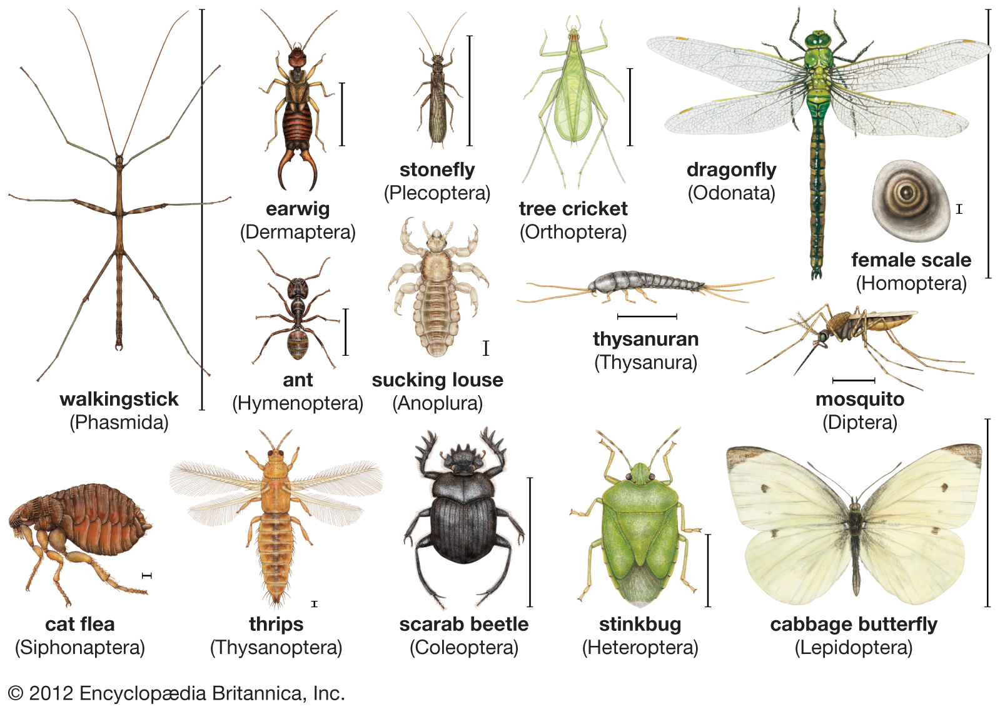
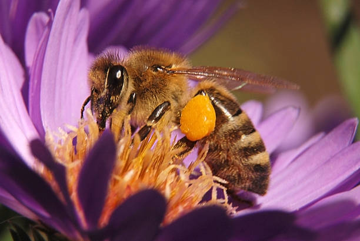
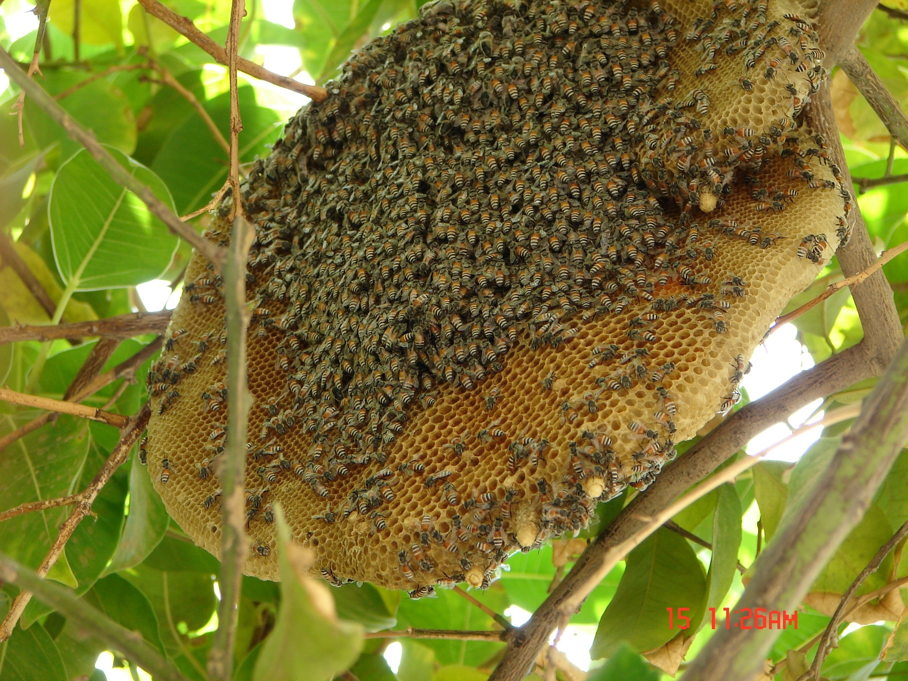
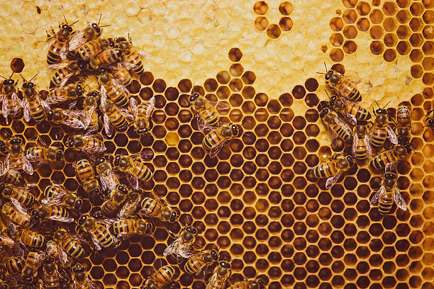
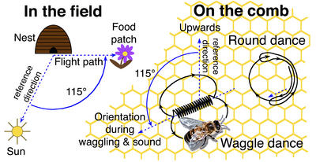
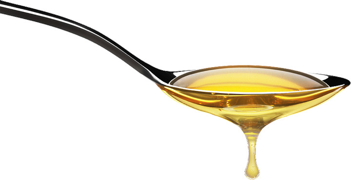
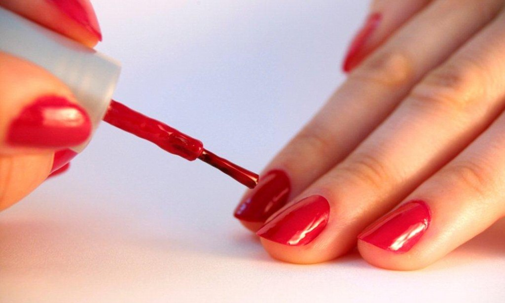
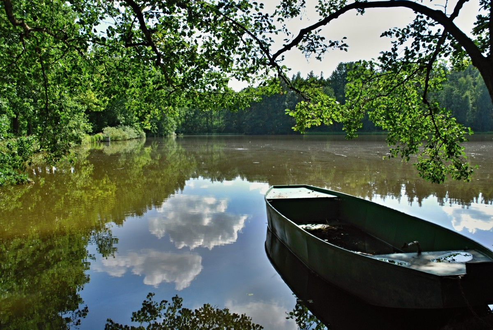

Bees
Bees are insects. Like all insects, they have six legs.

Bees are yellow and black.

A bee weighs about 100 milligrams. Bees go from flower to flower to drink nectar.

Nectar is 80% water and 20% sugar. After more than an hour visiting more than 1000 flowers, a bee can fill its stomach with 40 mg of nectar. It will then fly back to the hive.

In the hive, bees work together to make honey from nectar. They dry the nectar so that it is only 17% water. They put the honey in six-sided pockets made of wax. The wax construction is called a honeycomb.

Bees "dance" to tell other bees where to find flowers. In 1973, Karl von Frisch won a Nobel prize for his work in understanding the bees' dance. Bees use a "round dance" to say that there are flowers less than 30 m from the hive, and a "waggle dance" to say that there are flowers farther away.

A bee lives for about three weeks. During its life, it makes about one tablespoon of honey.

A tablespoon of honey has about 50 calories. One calorie raises the temperature of one litre of water by 1 °C (one degree Centigrade). During its life, a bee makes enough energy to boil water for a cup of tea.
James Gould, of Princeton University, has tested how bees understand geography. He thinks they have a map in their heads.
He put water in small bowls, and put sugar in the water. The bowls looked like flowers. He put the bowls of sugar water near a bee hive. Every day, he moved the bowls a few metres farther away. He put nail varnish on the bees that came to his bowls, to identify them. One day, he caught some bees which had nail varnish on them, and put them in a box. He went to a place where the bees could see their hive, but could not see the bowls with sugar water. He let the bees out of the box, one by one.

Do you think the bees flew back to the hive? No, they didn't. They flew here and there, in different directions, and then they understood how to go to the bowls of sugar water. They were in a new place; they were in a place where they had never been before, but they flew to the bowls in a straight line. Seventy-three of the 75 bees got to the bowls in less than 30 seconds.
In 1983, James Gould made another test. Again, he put out bowls of sugar water for his bees, and again he moved the bowls farther from the hive every day. One day, he put the bowls in a boat at the edge of a lake. The bees who drank water from the bowls returned to the hive and danced to tell other bees where the sugar water was. The other bees came to the bowls at the edge of the lake, too.

The next day, Gould moved the boat out into the middle of the lake. There were bees on the boat, drinking the sugar water. When these bees flew back to the the hive and danced, the other bees did not fly to the boat. James Gould thinks that the other bees thought: "This dance is not true. It is not possible to find flowers in a lake."